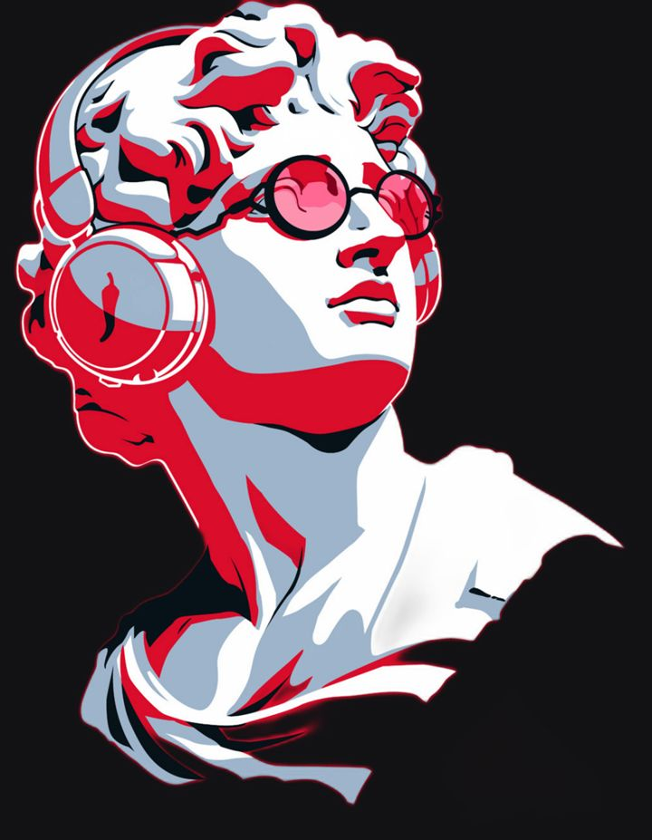

Rodada Seed concluída em Dez/2024, com a Canary como board observer. Foi o capital que bancou a virada de bandeira e a infraestrutura de hoje.
Extensão de Seed com Term Sheet assinado em Fev/2026. É uma extensão da mesma rodada — não um novo round de série.
Quem vem ao escritório os 5 dias da semana recebe um crédito extra no benefício na semana seguinte.
Proximidade acelera decisão, troca e cultura. Estar junto é o nosso multiplicador — e a gente reconhece quem aparece.
Marcou presença os 5 dias → o ticket cai. Sem formulário, sem pedir. (valor e regra final no #avisos)
Não é cobrança de ponto — é um obrigado a quem está construindo isso de perto, todo dia.
O jeito combinado de fazer uma tarefa que se repete — escrito, claro e acessível, pra que qualquer pessoa do time consiga executar com o mesmo resultado, sem depender de quem fez da primeira vez.
Crescemos ~9x. O que estava na cabeça de uma pessoa não escala — SOP transforma conhecimento individual em capacidade do time.
Crédito em 18s, implementação em <30 dias. Isso só se sustenta com processo claro e repetível, não com herói.
Mesmo padrão toda vez. Menos retrabalho, menos erro, onboarding mais rápido de quem chega.
Passo a passo que faz qualquer pessoa do time conseguir atender, do diagnóstico ao fluxo de resolução.
Como ativar e operar um convênio do começo ao fim, replicável pro próximo parceiro.
Checklist de closing com dono por etapa — fecha igual todo mês, sem depender de memória.
Nossos encontros também são SOP: objetivo claro, quem participa, recorrência definida.
Um SOP só vale se a próxima pessoa encontra. Cada coisa tem um lugar — e o ponto de partida pra buscar é sempre o Claude, conectado a tudo.
Sigla a gente explica ou tira. Comunicação direta, sem enfeite.
Desafio é desafio. Encara, nomeia, resolve — sem novela.
Business entrega produto funcional sem esperar fila. Ownership de verdade.
18s pra decidir crédito, <30 dias pra subir parceiro. Rápido é estratégia.
O que se promete, se entrega — e dentro do prazo. Confiança é construída assim.
NPS 79, retenção 88%. O cliente é a razão, não a consequência.
Originação PIX saindo de base 100 (jan) rumo a 675 (mai). Acelerar com funding próprio.
Limite do revendedor dentro do fluxo de pedido do âncora. Primeiro de novos parceiros.
Mais marcas Fortune 500 na rede e produto de prateleira com o Itaú BBA.
Uma só estrela-guia. A partir de agora, quando o time pergunta “estamos indo bem?”, a resposta tem um único nome: Receita.
Quebras por linha são visão gerencial. Pra fora (investidores) e pro time: estas duas linhas.
Obrigado por construir isso de perto. Bora pro próximo tri. 🍻

robbin